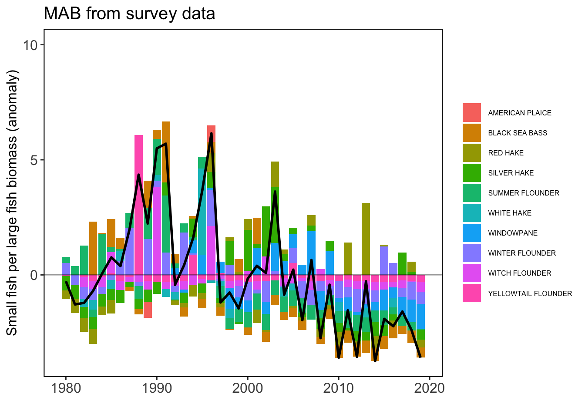
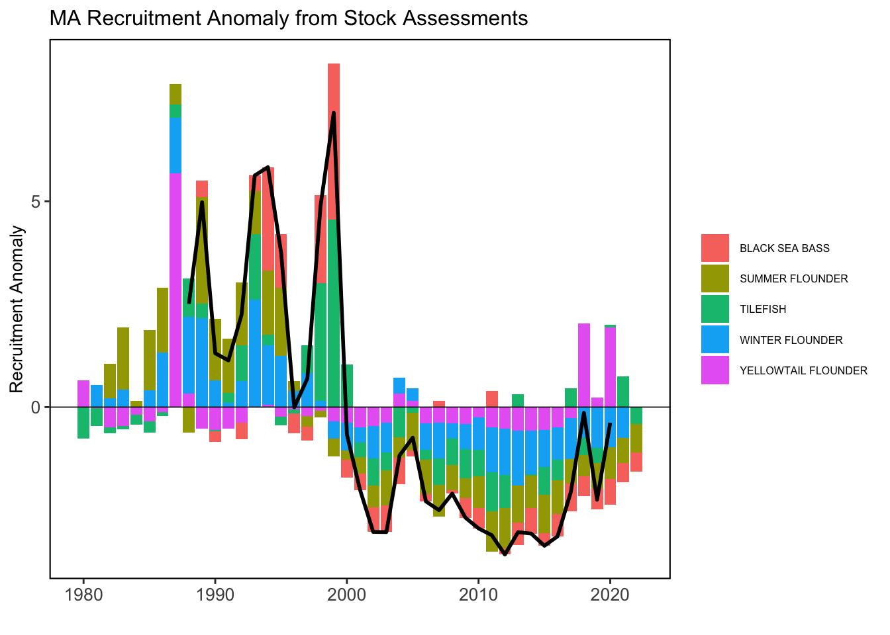
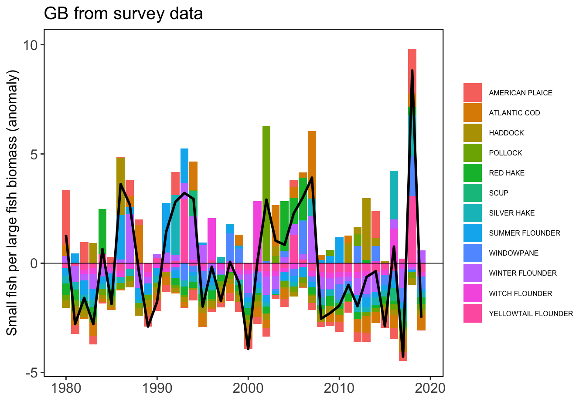
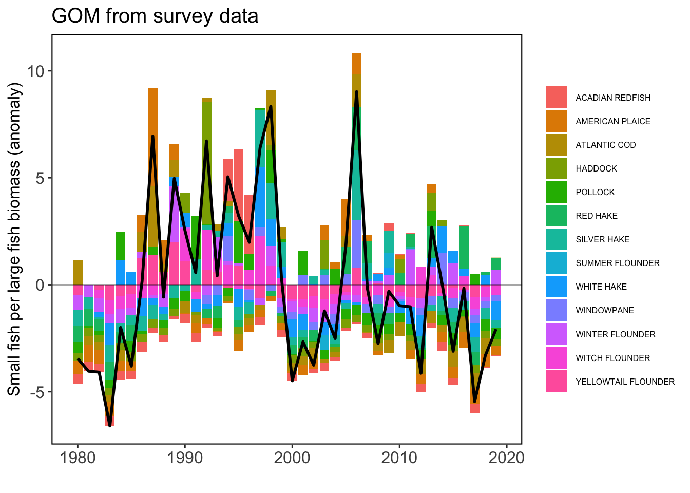
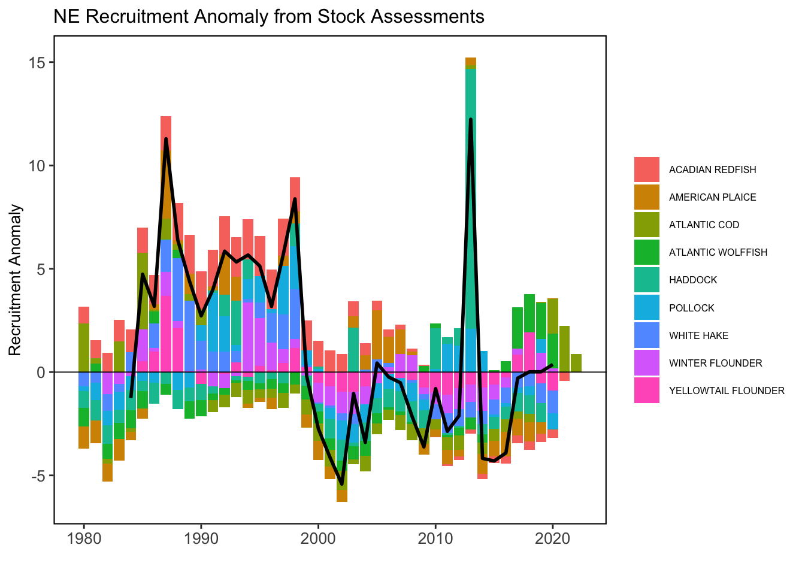

SMART Indicator Report: Fish Productivity Indicators
2 Indicator name
Fish Productivity Indicators
Includes variable(s): Acadian redfish -logr_abund_anom-Assessment, Acadian redfish -logrs_anom-Assessment, Acadian redfish -logs_biom_anom-Assessment, Acadian redfish -recruits_abund_lead1_anom-Assessment, Acadian redfish -recruits_abund_lead1-Assessment, Acadian redfish -rs_anom-Assessment, Acadian redfish -rs-Assessment, Acadian redfish -spawners_biom_lag0_anom-Assessment, Acadian redfish -spawners_biom_lag0-Assessment, ACADIAN REDFISH_Survey, American plaice -logr_abund_anom-Assessment, American plaice -logrs_anom-Assessment, American plaice -logs_biom_anom-Assessment, American plaice -recruits_abund_lead1_anom-Assessment, American plaice -recruits_abund_lead1-Assessment, American plaice -rs_anom-Assessment, American plaice -rs-Assessment, American plaice -spawners_biom_lag0_anom-Assessment, American plaice -spawners_biom_lag0-Assessment, AMERICAN PLAICE_Survey, Atlantic cod -logr_abund_anom-Assessment, Atlantic cod -logrs_anom-Assessment, Atlantic cod -logs_biom_anom-Assessment, Atlantic cod -recruits_abund_lead1_anom-Assessment, Atlantic cod -recruits_abund_lead1-Assessment, Atlantic cod -rs_anom-Assessment, Atlantic cod -rs-Assessment, Atlantic cod -spawners_biom_lag0_anom-Assessment, Atlantic cod -spawners_biom_lag0-Assessment, ATLANTIC COD_Survey, Atlantic herring -logr_abund_anom-Assessment, Atlantic herring -logrs_anom-Assessment, Atlantic herring -logs_biom_anom-Assessment, Atlantic herring -recruits_abund_lead1_anom-Assessment, Atlantic herring -recruits_abund_lead1-Assessment, Atlantic herring -rs_anom-Assessment, Atlantic herring -rs-Assessment, Atlantic herring -spawners_biom_lag0_anom-Assessment, Atlantic herring -spawners_biom_lag0-Assessment, Atlantic mackerel -logr_abund_anom-Assessment, Atlantic mackerel -logrs_anom-Assessment, Atlantic mackerel -logs_biom_anom-Assessment, Atlantic mackerel -recruits_abund_lead1_anom-Assessment, Atlantic mackerel -recruits_abund_lead1-Assessment, Atlantic mackerel -rs_anom-Assessment, Atlantic mackerel -rs-Assessment, Atlantic mackerel -spawners_biom_lag0_anom-Assessment, Atlantic mackerel -spawners_biom_lag0-Assessment, Atlantic wolffish -logr_abund_anom-Assessment, Atlantic wolffish -logrs_anom-Assessment, Atlantic wolffish -logs_biom_anom-Assessment, Atlantic wolffish -recruits_abund_lead1_anom-Assessment, Atlantic wolffish -recruits_abund_lead1-Assessment, Atlantic wolffish -rs_anom-Assessment, Atlantic wolffish -rs-Assessment, Atlantic wolffish -spawners_biom_lag0_anom-Assessment, Atlantic wolffish -spawners_biom_lag0-Assessment, Black sea bass -logr_abund_anom-Assessment, Black sea bass -logrs_anom-Assessment, Black sea bass -logs_biom_anom-Assessment, Black sea bass -recruits_abund_lead1_anom-Assessment, Black sea bass -recruits_abund_lead1-Assessment, Black sea bass -rs_anom-Assessment, Black sea bass -rs-Assessment, Black sea bass -spawners_biom_lag0_anom-Assessment, Black sea bass -spawners_biom_lag0-Assessment, BLACK SEA BASS_Survey, Butterfish -logr_abund_anom-Assessment, Butterfish -logrs_anom-Assessment, Butterfish -logs_biom_anom-Assessment, Butterfish -recruits_abund_lead1_anom-Assessment, Butterfish -recruits_abund_lead1-Assessment, Butterfish -rs_anom-Assessment, Butterfish -rs-Assessment, Butterfish -spawners_biom_lag0_anom-Assessment, Butterfish -spawners_biom_lag0-Assessment, Haddock -logr_abund_anom-Assessment, Haddock -logrs_anom-Assessment, Haddock -logs_biom_anom-Assessment, Haddock -recruits_abund_lead1_anom-Assessment, Haddock -recruits_abund_lead1-Assessment, Haddock -rs_anom-Assessment, Haddock -rs-Assessment, Haddock -spawners_biom_lag0_anom-Assessment, Haddock -spawners_biom_lag0-Assessment, HADDOCK_Survey, NE LME ACADIAN REDFISH_Survey, NE LME AMERICAN PLAICE_Survey, NE LME ATLANTIC COD_Survey, NE LME BLACK SEA BASS_Survey, NE LME HADDOCK_Survey, NE LME POLLOCK_Survey, NE LME RED HAKE_Survey, NE LME SILVER HAKE_Survey, NE LME SUMMER FLOUNDER_Survey, NE LME WHITE HAKE_Survey, NE LME WINDOWPANE_Survey, NE LME WINTER FLOUNDER_Survey, NE LME WITCH FLOUNDER_Survey, NE LME YELLOWTAIL FLOUNDER_Survey, Pollock -logr_abund_anom-Assessment, Pollock -logrs_anom-Assessment, Pollock -logs_biom_anom-Assessment, Pollock -recruits_abund_lead1_anom-Assessment, Pollock -recruits_abund_lead1-Assessment, Pollock -rs_anom-Assessment, Pollock -rs-Assessment, Pollock -spawners_biom_lag0_anom-Assessment, Pollock -spawners_biom_lag0-Assessment, POLLOCK_Survey, RED HAKE_Survey, Scup -logr_abund_anom-Assessment, Scup -logrs_anom-Assessment, Scup -logs_biom_anom-Assessment, Scup -recruits_abund_lead1_anom-Assessment, Scup -recruits_abund_lead1-Assessment, Scup -rs_anom-Assessment, Scup -rs-Assessment, Scup -spawners_biom_lag0_anom-Assessment, Scup -spawners_biom_lag0-Assessment, SCUP_Survey, SILVER HAKE_Survey, Spiny dogfish -logr_abund_anom-Assessment, Spiny dogfish -logrs_anom-Assessment, Spiny dogfish -logs_biom_anom-Assessment, Spiny dogfish -recruits_abund_lead1_anom-Assessment, Spiny dogfish -recruits_abund_lead1-Assessment, Spiny dogfish -rs_anom-Assessment, Spiny dogfish -rs-Assessment, Spiny dogfish -spawners_biom_lag0_anom-Assessment, Spiny dogfish -spawners_biom_lag0-Assessment, Summer flounder -logr_abund_anom-Assessment, Summer flounder -logrs_anom-Assessment, Summer flounder -logs_biom_anom-Assessment, Summer flounder -recruits_abund_lead1_anom-Assessment, Summer flounder -recruits_abund_lead1-Assessment, Summer flounder -rs_anom-Assessment, Summer flounder -rs-Assessment, Summer flounder -spawners_biom_lag0_anom-Assessment, Summer flounder -spawners_biom_lag0-Assessment, SUMMER FLOUNDER_Survey, Tilefish -logr_abund_anom-Assessment, Tilefish -logrs_anom-Assessment, Tilefish -logs_biom_anom-Assessment, Tilefish -recruits_abund_lead1_anom-Assessment, Tilefish -recruits_abund_lead1-Assessment, Tilefish -rs_anom-Assessment, Tilefish -rs-Assessment, Tilefish -spawners_biom_lag0_anom-Assessment, Tilefish -spawners_biom_lag0-Assessment, White hake -logr_abund_anom-Assessment, White hake -logrs_anom-Assessment, White hake -logs_biom_anom-Assessment, White hake -recruits_abund_lead1_anom-Assessment, White hake -recruits_abund_lead1-Assessment, White hake -rs_anom-Assessment, White hake -rs-Assessment, White hake -spawners_biom_lag0_anom-Assessment, White hake -spawners_biom_lag0-Assessment, WHITE HAKE_Survey, WINDOWPANE_Survey, Winter flounder -logr_abund_anom-Assessment, Winter flounder -logrs_anom-Assessment, Winter flounder -logs_biom_anom-Assessment, Winter flounder -recruits_abund_lead1_anom-Assessment, Winter flounder -recruits_abund_lead1-Assessment, Winter flounder -rs_anom-Assessment, Winter flounder -rs-Assessment, Winter flounder -spawners_biom_lag0_anom-Assessment, Winter flounder -spawners_biom_lag0-Assessment, WINTER FLOUNDER_Survey, WITCH FLOUNDER_Survey, Yellowtail flounder -logr_abund_anom-Assessment, Yellowtail flounder -logrs_anom-Assessment, Yellowtail flounder -logs_biom_anom-Assessment, Yellowtail flounder -recruits_abund_lead1_anom-Assessment, Yellowtail flounder -recruits_abund_lead1-Assessment, Yellowtail flounder -rs_anom-Assessment, Yellowtail flounder -rs-Assessment, Yellowtail flounder -spawners_biom_lag0_anom-Assessment, Yellowtail flounder -spawners_biom_lag0-Assessment, YELLOWTAIL FLOUNDER_Survey
4 Indicator visualization
The small fish per large fish anomaly indicator, derived from NEFSC bottom trawl survey data, shows that productivity has been declining in the Mid-Atlantic region since 2003. A similar analysis based on stock assessment model outputs (recruitment per spawning stock biomass anomaly) for stocks primarily inhabiting the Mid-Atlantic region also shows a decline in productivity. The indicators show great variability in the Gulf of Maine and Georges Bank, with both regions being below average for much of the past decade.

## [1] "Assessment variable includes GB and GOM. See plot for EPU = GB."5 Indicator documentation
5.1 Are indicators available for others to use (data downloadable)?
Yes
5.1.1 Where can indicators be found?
Data: https://noaa-edab.github.io/ecodata/index.html
Description: https://noaa-edab.github.io/catalog/productivity_anomaly.html
Technical documentation: https://noaa-edab.github.io/tech-doc/productivity_anomaly.html
5.1.2 How often are they updated? Are future updates likely?
[need sequential look at datasets for update frequency. Future requires judgement]
5.2 Gather indicator statistics
5.2.1 Units
Indicator | Units |
|---|---|
Acadian redfish -logr_abund_anom-Assessment | NA |
Acadian redfish -logrs_anom-Assessment | NA |
Acadian redfish -logs_biom_anom-Assessment | NA |
Acadian redfish -recruits_abund_lead1_anom-Assessment | NA |
Acadian redfish -recruits_abund_lead1-Assessment | NA |
Acadian redfish -rs_anom-Assessment | NA |
Acadian redfish -rs-Assessment | NA |
Acadian redfish -spawners_biom_lag0_anom-Assessment | NA |
Acadian redfish -spawners_biom_lag0-Assessment | NA |
ACADIAN REDFISH_Survey | anomaly (r/s) |
American plaice -logr_abund_anom-Assessment | NA |
American plaice -logrs_anom-Assessment | NA |
American plaice -logs_biom_anom-Assessment | NA |
American plaice -recruits_abund_lead1_anom-Assessment | NA |
American plaice -recruits_abund_lead1-Assessment | NA |
American plaice -rs_anom-Assessment | NA |
American plaice -rs-Assessment | NA |
American plaice -spawners_biom_lag0_anom-Assessment | NA |
American plaice -spawners_biom_lag0-Assessment | NA |
AMERICAN PLAICE_Survey | anomaly (r/s) |
Atlantic cod -logr_abund_anom-Assessment | NA |
Atlantic cod -logrs_anom-Assessment | NA |
Atlantic cod -logs_biom_anom-Assessment | NA |
Atlantic cod -recruits_abund_lead1_anom-Assessment | NA |
Atlantic cod -recruits_abund_lead1-Assessment | NA |
Atlantic cod -rs_anom-Assessment | NA |
Atlantic cod -rs-Assessment | NA |
Atlantic cod -spawners_biom_lag0_anom-Assessment | NA |
Atlantic cod -spawners_biom_lag0-Assessment | NA |
ATLANTIC COD_Survey | anomaly (r/s) |
Atlantic herring -logr_abund_anom-Assessment | NA |
Atlantic herring -logrs_anom-Assessment | NA |
Atlantic herring -logs_biom_anom-Assessment | NA |
Atlantic herring -recruits_abund_lead1_anom-Assessment | NA |
Atlantic herring -recruits_abund_lead1-Assessment | NA |
Atlantic herring -rs_anom-Assessment | NA |
Atlantic herring -rs-Assessment | NA |
Atlantic herring -spawners_biom_lag0_anom-Assessment | NA |
Atlantic herring -spawners_biom_lag0-Assessment | NA |
Atlantic mackerel -logr_abund_anom-Assessment | NA |
Atlantic mackerel -logrs_anom-Assessment | NA |
Atlantic mackerel -logs_biom_anom-Assessment | NA |
Atlantic mackerel -recruits_abund_lead1_anom-Assessment | NA |
Atlantic mackerel -recruits_abund_lead1-Assessment | NA |
Atlantic mackerel -rs_anom-Assessment | NA |
Atlantic mackerel -rs-Assessment | NA |
Atlantic mackerel -spawners_biom_lag0_anom-Assessment | NA |
Atlantic mackerel -spawners_biom_lag0-Assessment | NA |
Atlantic wolffish -logr_abund_anom-Assessment | NA |
Atlantic wolffish -logrs_anom-Assessment | NA |
Atlantic wolffish -logs_biom_anom-Assessment | NA |
Atlantic wolffish -recruits_abund_lead1_anom-Assessment | NA |
Atlantic wolffish -recruits_abund_lead1-Assessment | NA |
Atlantic wolffish -rs_anom-Assessment | NA |
Atlantic wolffish -rs-Assessment | NA |
Atlantic wolffish -spawners_biom_lag0_anom-Assessment | NA |
Atlantic wolffish -spawners_biom_lag0-Assessment | NA |
Black sea bass -logr_abund_anom-Assessment | NA |
Black sea bass -logrs_anom-Assessment | NA |
Black sea bass -logs_biom_anom-Assessment | NA |
Black sea bass -recruits_abund_lead1_anom-Assessment | NA |
Black sea bass -recruits_abund_lead1-Assessment | NA |
Black sea bass -rs_anom-Assessment | NA |
Black sea bass -rs-Assessment | NA |
Black sea bass -spawners_biom_lag0_anom-Assessment | NA |
Black sea bass -spawners_biom_lag0-Assessment | NA |
BLACK SEA BASS_Survey | anomaly (r/s) |
Butterfish -logr_abund_anom-Assessment | NA |
Butterfish -logrs_anom-Assessment | NA |
Butterfish -logs_biom_anom-Assessment | NA |
Butterfish -recruits_abund_lead1_anom-Assessment | NA |
Butterfish -recruits_abund_lead1-Assessment | NA |
Butterfish -rs_anom-Assessment | NA |
Butterfish -rs-Assessment | NA |
Butterfish -spawners_biom_lag0_anom-Assessment | NA |
Butterfish -spawners_biom_lag0-Assessment | NA |
Haddock -logr_abund_anom-Assessment | NA |
Haddock -logrs_anom-Assessment | NA |
Haddock -logs_biom_anom-Assessment | NA |
Haddock -recruits_abund_lead1_anom-Assessment | NA |
Haddock -recruits_abund_lead1-Assessment | NA |
Haddock -rs_anom-Assessment | NA |
Haddock -rs-Assessment | NA |
Haddock -spawners_biom_lag0_anom-Assessment | NA |
Haddock -spawners_biom_lag0-Assessment | NA |
HADDOCK_Survey | anomaly (r/s) |
NE LME ACADIAN REDFISH_Survey | anomaly (r/s) |
NE LME AMERICAN PLAICE_Survey | anomaly (r/s) |
NE LME ATLANTIC COD_Survey | anomaly (r/s) |
NE LME BLACK SEA BASS_Survey | anomaly (r/s) |
NE LME HADDOCK_Survey | anomaly (r/s) |
NE LME POLLOCK_Survey | anomaly (r/s) |
NE LME RED HAKE_Survey | anomaly (r/s) |
NE LME SILVER HAKE_Survey | anomaly (r/s) |
NE LME SUMMER FLOUNDER_Survey | anomaly (r/s) |
NE LME WHITE HAKE_Survey | anomaly (r/s) |
NE LME WINDOWPANE_Survey | anomaly (r/s) |
NE LME WINTER FLOUNDER_Survey | anomaly (r/s) |
NE LME WITCH FLOUNDER_Survey | anomaly (r/s) |
NE LME YELLOWTAIL FLOUNDER_Survey | anomaly (r/s) |
Pollock -logr_abund_anom-Assessment | NA |
Pollock -logrs_anom-Assessment | NA |
Pollock -logs_biom_anom-Assessment | NA |
Pollock -recruits_abund_lead1_anom-Assessment | NA |
Pollock -recruits_abund_lead1-Assessment | NA |
Pollock -rs_anom-Assessment | NA |
Pollock -rs-Assessment | NA |
Pollock -spawners_biom_lag0_anom-Assessment | NA |
Pollock -spawners_biom_lag0-Assessment | NA |
POLLOCK_Survey | anomaly (r/s) |
RED HAKE_Survey | anomaly (r/s) |
Scup -logr_abund_anom-Assessment | NA |
Scup -logrs_anom-Assessment | NA |
Scup -logs_biom_anom-Assessment | NA |
Scup -recruits_abund_lead1_anom-Assessment | NA |
Scup -recruits_abund_lead1-Assessment | NA |
Scup -rs_anom-Assessment | NA |
Scup -rs-Assessment | NA |
Scup -spawners_biom_lag0_anom-Assessment | NA |
Scup -spawners_biom_lag0-Assessment | NA |
SCUP_Survey | anomaly (r/s) |
SILVER HAKE_Survey | anomaly (r/s) |
Spiny dogfish -logr_abund_anom-Assessment | NA |
Spiny dogfish -logrs_anom-Assessment | NA |
Spiny dogfish -logs_biom_anom-Assessment | NA |
Spiny dogfish -recruits_abund_lead1_anom-Assessment | NA |
Spiny dogfish -recruits_abund_lead1-Assessment | NA |
Spiny dogfish -rs_anom-Assessment | NA |
Spiny dogfish -rs-Assessment | NA |
Spiny dogfish -spawners_biom_lag0_anom-Assessment | NA |
Spiny dogfish -spawners_biom_lag0-Assessment | NA |
Summer flounder -logr_abund_anom-Assessment | NA |
Summer flounder -logrs_anom-Assessment | NA |
Summer flounder -logs_biom_anom-Assessment | NA |
Summer flounder -recruits_abund_lead1_anom-Assessment | NA |
Summer flounder -recruits_abund_lead1-Assessment | NA |
Summer flounder -rs_anom-Assessment | NA |
Summer flounder -rs-Assessment | NA |
Summer flounder -spawners_biom_lag0_anom-Assessment | NA |
Summer flounder -spawners_biom_lag0-Assessment | NA |
SUMMER FLOUNDER_Survey | anomaly (r/s) |
Tilefish -logr_abund_anom-Assessment | NA |
Tilefish -logrs_anom-Assessment | NA |
Tilefish -logs_biom_anom-Assessment | NA |
Tilefish -recruits_abund_lead1_anom-Assessment | NA |
Tilefish -recruits_abund_lead1-Assessment | NA |
Tilefish -rs_anom-Assessment | NA |
Tilefish -rs-Assessment | NA |
Tilefish -spawners_biom_lag0_anom-Assessment | NA |
Tilefish -spawners_biom_lag0-Assessment | NA |
White hake -logr_abund_anom-Assessment | NA |
White hake -logrs_anom-Assessment | NA |
White hake -logs_biom_anom-Assessment | NA |
White hake -recruits_abund_lead1_anom-Assessment | NA |
White hake -recruits_abund_lead1-Assessment | NA |
White hake -rs_anom-Assessment | NA |
White hake -rs-Assessment | NA |
White hake -spawners_biom_lag0_anom-Assessment | NA |
White hake -spawners_biom_lag0-Assessment | NA |
WHITE HAKE_Survey | anomaly (r/s) |
WINDOWPANE_Survey | anomaly (r/s) |
Winter flounder -logr_abund_anom-Assessment | NA |
Winter flounder -logrs_anom-Assessment | NA |
Winter flounder -logs_biom_anom-Assessment | NA |
Winter flounder -recruits_abund_lead1_anom-Assessment | NA |
Winter flounder -recruits_abund_lead1-Assessment | NA |
Winter flounder -rs_anom-Assessment | NA |
Winter flounder -rs-Assessment | NA |
Winter flounder -spawners_biom_lag0_anom-Assessment | NA |
Winter flounder -spawners_biom_lag0-Assessment | NA |
WINTER FLOUNDER_Survey | anomaly (r/s) |
WITCH FLOUNDER_Survey | anomaly (r/s) |
Yellowtail flounder -logr_abund_anom-Assessment | NA |
Yellowtail flounder -logrs_anom-Assessment | NA |
Yellowtail flounder -logs_biom_anom-Assessment | NA |
Yellowtail flounder -recruits_abund_lead1_anom-Assessment | NA |
Yellowtail flounder -recruits_abund_lead1-Assessment | NA |
Yellowtail flounder -rs_anom-Assessment | NA |
Yellowtail flounder -rs-Assessment | NA |
Yellowtail flounder -spawners_biom_lag0_anom-Assessment | NA |
Yellowtail flounder -spawners_biom_lag0-Assessment | NA |
YELLOWTAIL FLOUNDER_Survey | anomaly (r/s) |
5.2.2 Length of time series, start and end date, periodicity
General overview: No response
Indicator specifics:
Indicator | EPU | StartYear | EndYear | NumYears | MissingYears |
|---|---|---|---|---|---|
Acadian redfish -logr_abund_anom-Assessment | NE | 1980 | 2021 | 42 | 0 |
Acadian redfish -logrs_anom-Assessment | NE | 1980 | 2021 | 42 | 0 |
Acadian redfish -logs_biom_anom-Assessment | NE | 1980 | 2021 | 42 | 0 |
Acadian redfish -recruits_abund_lead1_anom-Assessment | NE | 1980 | 2021 | 42 | 0 |
Acadian redfish -recruits_abund_lead1-Assessment | NE | 1980 | 2021 | 42 | 0 |
Acadian redfish -rs_anom-Assessment | NE | 1980 | 2021 | 42 | 0 |
Acadian redfish -rs-Assessment | NE | 1980 | 2021 | 42 | 0 |
Acadian redfish -spawners_biom_lag0_anom-Assessment | NE | 1980 | 2021 | 42 | 0 |
Acadian redfish -spawners_biom_lag0-Assessment | NE | 1980 | 2021 | 42 | 0 |
ACADIAN REDFISH_Survey | GOM | 1980 | 2019 | 40 | 0 |
American plaice -logr_abund_anom-Assessment | NE | 1980 | 2020 | 41 | 0 |
American plaice -logrs_anom-Assessment | NE | 1980 | 2020 | 41 | 0 |
American plaice -logs_biom_anom-Assessment | NE | 1980 | 2020 | 41 | 0 |
American plaice -recruits_abund_lead1_anom-Assessment | NE | 1980 | 2020 | 41 | 0 |
American plaice -recruits_abund_lead1-Assessment | NE | 1980 | 2020 | 41 | 0 |
American plaice -rs_anom-Assessment | NE | 1980 | 2020 | 41 | 0 |
American plaice -rs-Assessment | NE | 1980 | 2020 | 41 | 0 |
American plaice -spawners_biom_lag0_anom-Assessment | NE | 1980 | 2020 | 41 | 0 |
American plaice -spawners_biom_lag0-Assessment | NE | 1980 | 2020 | 41 | 0 |
AMERICAN PLAICE_Survey | GB | 1980 | 2019 | 40 | 0 |
AMERICAN PLAICE_Survey | GOM | 1980 | 2019 | 40 | 0 |
AMERICAN PLAICE_Survey | MAB | 1989 | 1996 | 2 | 6 |
Atlantic cod -logr_abund_anom-Assessment | Eastern Gulf of Maine | 1980 | 2022 | 43 | 0 |
Atlantic cod -logr_abund_anom-Assessment | Southern New England | 1980 | 2022 | 43 | 0 |
Atlantic cod -logr_abund_anom-Assessment | Western Gulf of Maine | 1980 | 2022 | 43 | 0 |
Atlantic cod -logr_abund_anom-Assessment | NE | 1980 | 2022 | 43 | 0 |
Atlantic cod -logrs_anom-Assessment | Eastern Gulf of Maine | 1981 | 2022 | 42 | 0 |
Atlantic cod -logrs_anom-Assessment | Southern New England | 1981 | 2022 | 42 | 0 |
Atlantic cod -logrs_anom-Assessment | Western Gulf of Maine | 1981 | 2022 | 42 | 0 |
Atlantic cod -logrs_anom-Assessment | NE | 1980 | 2022 | 43 | 0 |
Atlantic cod -logs_biom_anom-Assessment | Eastern Gulf of Maine | 1981 | 2022 | 42 | 0 |
Atlantic cod -logs_biom_anom-Assessment | Southern New England | 1981 | 2022 | 42 | 0 |
Atlantic cod -logs_biom_anom-Assessment | Western Gulf of Maine | 1981 | 2022 | 42 | 0 |
Atlantic cod -logs_biom_anom-Assessment | NE | 1980 | 2022 | 43 | 0 |
Atlantic cod -recruits_abund_lead1_anom-Assessment | Eastern Gulf of Maine | 1980 | 2022 | 43 | 0 |
Atlantic cod -recruits_abund_lead1_anom-Assessment | Southern New England | 1980 | 2022 | 43 | 0 |
Atlantic cod -recruits_abund_lead1_anom-Assessment | Western Gulf of Maine | 1980 | 2022 | 43 | 0 |
Atlantic cod -recruits_abund_lead1_anom-Assessment | NE | 1980 | 2022 | 43 | 0 |
Atlantic cod -recruits_abund_lead1-Assessment | Eastern Gulf of Maine | 1980 | 2022 | 43 | 0 |
Atlantic cod -recruits_abund_lead1-Assessment | Southern New England | 1980 | 2022 | 43 | 0 |
Atlantic cod -recruits_abund_lead1-Assessment | Western Gulf of Maine | 1980 | 2022 | 43 | 0 |
Atlantic cod -recruits_abund_lead1-Assessment | NE | 1980 | 2022 | 43 | 0 |
Atlantic cod -rs_anom-Assessment | Eastern Gulf of Maine | 1981 | 2022 | 42 | 0 |
Atlantic cod -rs_anom-Assessment | Southern New England | 1981 | 2022 | 42 | 0 |
Atlantic cod -rs_anom-Assessment | Western Gulf of Maine | 1981 | 2022 | 42 | 0 |
Atlantic cod -rs_anom-Assessment | NE | 1980 | 2022 | 43 | 0 |
Atlantic cod -rs-Assessment | Eastern Gulf of Maine | 1981 | 2022 | 42 | 0 |
Atlantic cod -rs-Assessment | Southern New England | 1981 | 2022 | 42 | 0 |
Atlantic cod -rs-Assessment | Western Gulf of Maine | 1981 | 2022 | 42 | 0 |
Atlantic cod -rs-Assessment | NE | 1980 | 2022 | 43 | 0 |
Atlantic cod -spawners_biom_lag0_anom-Assessment | Eastern Gulf of Maine | 1981 | 2022 | 42 | 0 |
Atlantic cod -spawners_biom_lag0_anom-Assessment | Southern New England | 1981 | 2022 | 42 | 0 |
Atlantic cod -spawners_biom_lag0_anom-Assessment | Western Gulf of Maine | 1981 | 2022 | 42 | 0 |
Atlantic cod -spawners_biom_lag0_anom-Assessment | NE | 1980 | 2022 | 43 | 0 |
Atlantic cod -spawners_biom_lag0-Assessment | Eastern Gulf of Maine | 1981 | 2022 | 42 | 0 |
Atlantic cod -spawners_biom_lag0-Assessment | Southern New England | 1981 | 2022 | 42 | 0 |
Atlantic cod -spawners_biom_lag0-Assessment | Western Gulf of Maine | 1981 | 2022 | 42 | 0 |
Atlantic cod -spawners_biom_lag0-Assessment | NE | 1980 | 2022 | 43 | 0 |
ATLANTIC COD_Survey | GB | 1980 | 2019 | 40 | 0 |
ATLANTIC COD_Survey | GOM | 1980 | 2019 | 40 | 0 |
Atlantic herring -logr_abund_anom-Assessment | ALL | 1980 | 2022 | 43 | 0 |
Atlantic herring -logrs_anom-Assessment | ALL | 1980 | 2022 | 43 | 0 |
Atlantic herring -logs_biom_anom-Assessment | ALL | 1980 | 2022 | 43 | 0 |
Atlantic herring -recruits_abund_lead1_anom-Assessment | ALL | 1980 | 2022 | 43 | 0 |
Atlantic herring -recruits_abund_lead1-Assessment | ALL | 1980 | 2022 | 43 | 0 |
Atlantic herring -rs_anom-Assessment | ALL | 1980 | 2022 | 43 | 0 |
Atlantic herring -rs-Assessment | ALL | 1980 | 2022 | 43 | 0 |
Atlantic herring -spawners_biom_lag0_anom-Assessment | ALL | 1980 | 2022 | 43 | 0 |
Atlantic herring -spawners_biom_lag0-Assessment | ALL | 1980 | 2022 | 43 | 0 |
Atlantic mackerel -logr_abund_anom-Assessment | ALL | 1980 | 2021 | 42 | 0 |
Atlantic mackerel -logrs_anom-Assessment | ALL | 1980 | 2021 | 42 | 0 |
Atlantic mackerel -logs_biom_anom-Assessment | ALL | 1980 | 2021 | 42 | 0 |
Atlantic mackerel -recruits_abund_lead1_anom-Assessment | ALL | 1980 | 2021 | 42 | 0 |
Atlantic mackerel -recruits_abund_lead1-Assessment | ALL | 1980 | 2021 | 42 | 0 |
Atlantic mackerel -rs_anom-Assessment | ALL | 1980 | 2021 | 42 | 0 |
Atlantic mackerel -rs-Assessment | ALL | 1980 | 2021 | 42 | 0 |
Atlantic mackerel -spawners_biom_lag0_anom-Assessment | ALL | 1980 | 2021 | 42 | 0 |
Atlantic mackerel -spawners_biom_lag0-Assessment | ALL | 1980 | 2021 | 42 | 0 |
Atlantic wolffish -logr_abund_anom-Assessment | NE | 1980 | 2020 | 41 | 0 |
Atlantic wolffish -logrs_anom-Assessment | NE | 1980 | 2020 | 41 | 0 |
Atlantic wolffish -logs_biom_anom-Assessment | NE | 1980 | 2020 | 41 | 0 |
Atlantic wolffish -recruits_abund_lead1_anom-Assessment | NE | 1980 | 2020 | 41 | 0 |
Atlantic wolffish -recruits_abund_lead1-Assessment | NE | 1980 | 2020 | 41 | 0 |
Atlantic wolffish -rs_anom-Assessment | NE | 1980 | 2020 | 41 | 0 |
Atlantic wolffish -rs-Assessment | NE | 1980 | 2020 | 41 | 0 |
Atlantic wolffish -spawners_biom_lag0_anom-Assessment | NE | 1980 | 2020 | 41 | 0 |
Atlantic wolffish -spawners_biom_lag0-Assessment | NE | 1980 | 2020 | 41 | 0 |
Black sea bass -logr_abund_anom-Assessment | MA | 1988 | 2022 | 35 | 0 |
Black sea bass -logrs_anom-Assessment | MA | 1989 | 2022 | 34 | 0 |
Black sea bass -logs_biom_anom-Assessment | MA | 1989 | 2022 | 34 | 0 |
Black sea bass -recruits_abund_lead1_anom-Assessment | MA | 1988 | 2022 | 35 | 0 |
Black sea bass -recruits_abund_lead1-Assessment | MA | 1988 | 2022 | 35 | 0 |
Black sea bass -rs_anom-Assessment | MA | 1989 | 2022 | 34 | 0 |
Black sea bass -rs-Assessment | MA | 1989 | 2022 | 34 | 0 |
Black sea bass -spawners_biom_lag0_anom-Assessment | MA | 1989 | 2022 | 34 | 0 |
Black sea bass -spawners_biom_lag0-Assessment | MA | 1989 | 2022 | 34 | 0 |
BLACK SEA BASS_Survey | MAB | 1983 | 2019 | 37 | 0 |
Butterfish -logr_abund_anom-Assessment | ALL | 1989 | 2022 | 34 | 0 |
Butterfish -logrs_anom-Assessment | ALL | 1989 | 2022 | 34 | 0 |
Butterfish -logs_biom_anom-Assessment | ALL | 1989 | 2022 | 34 | 0 |
Butterfish -recruits_abund_lead1_anom-Assessment | ALL | 1989 | 2022 | 34 | 0 |
Butterfish -recruits_abund_lead1-Assessment | ALL | 1989 | 2022 | 34 | 0 |
Butterfish -rs_anom-Assessment | ALL | 1989 | 2022 | 34 | 0 |
Butterfish -rs-Assessment | ALL | 1989 | 2022 | 34 | 0 |
Butterfish -spawners_biom_lag0_anom-Assessment | ALL | 1989 | 2022 | 34 | 0 |
Butterfish -spawners_biom_lag0-Assessment | ALL | 1989 | 2022 | 34 | 0 |
Haddock -logr_abund_anom-Assessment | Eastern Georges Bank | 1980 | 2021 | 42 | 0 |
Haddock -logr_abund_anom-Assessment | NE | 1980 | 2020 | 41 | 0 |
Haddock -logrs_anom-Assessment | Eastern Georges Bank | 1980 | 2021 | 42 | 0 |
Haddock -logrs_anom-Assessment | NE | 1980 | 2020 | 41 | 0 |
Haddock -logs_biom_anom-Assessment | Eastern Georges Bank | 1980 | 2021 | 42 | 0 |
Haddock -logs_biom_anom-Assessment | NE | 1980 | 2020 | 41 | 0 |
Haddock -recruits_abund_lead1_anom-Assessment | Eastern Georges Bank | 1980 | 2021 | 42 | 0 |
Haddock -recruits_abund_lead1_anom-Assessment | NE | 1980 | 2020 | 41 | 0 |
Haddock -recruits_abund_lead1-Assessment | Eastern Georges Bank | 1980 | 2021 | 42 | 0 |
Haddock -recruits_abund_lead1-Assessment | NE | 1980 | 2020 | 41 | 0 |
Haddock -rs_anom-Assessment | Eastern Georges Bank | 1980 | 2021 | 42 | 0 |
Haddock -rs_anom-Assessment | NE | 1980 | 2020 | 41 | 0 |
Haddock -rs-Assessment | Eastern Georges Bank | 1980 | 2021 | 42 | 0 |
Haddock -rs-Assessment | NE | 1980 | 2020 | 41 | 0 |
Haddock -spawners_biom_lag0_anom-Assessment | Eastern Georges Bank | 1980 | 2021 | 42 | 0 |
Haddock -spawners_biom_lag0_anom-Assessment | NE | 1980 | 2020 | 41 | 0 |
Haddock -spawners_biom_lag0-Assessment | Eastern Georges Bank | 1980 | 2021 | 42 | 0 |
Haddock -spawners_biom_lag0-Assessment | NE | 1980 | 2020 | 41 | 0 |
HADDOCK_Survey | GB | 1980 | 2019 | 40 | 0 |
HADDOCK_Survey | GOM | 1980 | 2019 | 40 | 0 |
NE LME ACADIAN REDFISH_Survey | All | 1980 | 2019 | 40 | 0 |
NE LME AMERICAN PLAICE_Survey | All | 1980 | 2019 | 40 | 0 |
NE LME ATLANTIC COD_Survey | All | 1980 | 2020 | 41 | 0 |
NE LME BLACK SEA BASS_Survey | All | 1983 | 2020 | 38 | 0 |
NE LME HADDOCK_Survey | All | 1980 | 2019 | 40 | 0 |
NE LME POLLOCK_Survey | All | 1980 | 2019 | 40 | 0 |
NE LME RED HAKE_Survey | All | 1980 | 2020 | 35 | 6 |
NE LME SILVER HAKE_Survey | All | 1980 | 2020 | 41 | 0 |
NE LME SUMMER FLOUNDER_Survey | All | 1980 | 2020 | 41 | 0 |
NE LME WHITE HAKE_Survey | All | 1982 | 2019 | 38 | 0 |
NE LME WINDOWPANE_Survey | All | 1992 | 2020 | 29 | 0 |
NE LME WINTER FLOUNDER_Survey | All | 1980 | 2020 | 41 | 0 |
NE LME WITCH FLOUNDER_Survey | All | 1982 | 2020 | 39 | 0 |
NE LME YELLOWTAIL FLOUNDER_Survey | All | 1980 | 2019 | 40 | 0 |
Pollock -logr_abund_anom-Assessment | NE | 1980 | 2020 | 41 | 0 |
Pollock -logrs_anom-Assessment | NE | 1980 | 2020 | 41 | 0 |
Pollock -logs_biom_anom-Assessment | NE | 1980 | 2020 | 41 | 0 |
Pollock -recruits_abund_lead1_anom-Assessment | NE | 1980 | 2020 | 41 | 0 |
Pollock -recruits_abund_lead1-Assessment | NE | 1980 | 2020 | 41 | 0 |
Pollock -rs_anom-Assessment | NE | 1980 | 2020 | 41 | 0 |
Pollock -rs-Assessment | NE | 1980 | 2020 | 41 | 0 |
Pollock -spawners_biom_lag0_anom-Assessment | NE | 1980 | 2020 | 41 | 0 |
Pollock -spawners_biom_lag0-Assessment | NE | 1980 | 2020 | 41 | 0 |
POLLOCK_Survey | GB | 1980 | 2019 | 40 | 0 |
POLLOCK_Survey | GOM | 1980 | 2019 | 40 | 0 |
RED HAKE_Survey | GB | 1980 | 2019 | 34 | 6 |
RED HAKE_Survey | GOM | 1980 | 2019 | 34 | 6 |
RED HAKE_Survey | MAB | 1980 | 2019 | 34 | 6 |
Scup -logr_abund_anom-Assessment | ALL | 1984 | 2022 | 39 | 0 |
Scup -logrs_anom-Assessment | ALL | 1984 | 2022 | 39 | 0 |
Scup -logs_biom_anom-Assessment | ALL | 1984 | 2022 | 39 | 0 |
Scup -recruits_abund_lead1_anom-Assessment | ALL | 1984 | 2022 | 39 | 0 |
Scup -recruits_abund_lead1-Assessment | ALL | 1984 | 2022 | 39 | 0 |
Scup -rs_anom-Assessment | ALL | 1984 | 2022 | 39 | 0 |
Scup -rs-Assessment | ALL | 1984 | 2022 | 39 | 0 |
Scup -spawners_biom_lag0_anom-Assessment | ALL | 1984 | 2022 | 39 | 0 |
Scup -spawners_biom_lag0-Assessment | ALL | 1984 | 2022 | 39 | 0 |
SCUP_Survey | GB | 1994 | 2017 | 3 | 21 |
SILVER HAKE_Survey | GB | 1980 | 2019 | 40 | 0 |
SILVER HAKE_Survey | GOM | 1980 | 2019 | 40 | 0 |
SILVER HAKE_Survey | MAB | 1980 | 2019 | 40 | 0 |
Spiny dogfish -logr_abund_anom-Assessment | ALL | 1980 | 2021 | 42 | 0 |
Spiny dogfish -logrs_anom-Assessment | ALL | 1980 | 2021 | 42 | 0 |
Spiny dogfish -logs_biom_anom-Assessment | ALL | 1980 | 2021 | 42 | 0 |
Spiny dogfish -recruits_abund_lead1_anom-Assessment | ALL | 1980 | 2021 | 42 | 0 |
Spiny dogfish -recruits_abund_lead1-Assessment | ALL | 1980 | 2021 | 42 | 0 |
Spiny dogfish -rs_anom-Assessment | ALL | 1980 | 2021 | 42 | 0 |
Spiny dogfish -rs-Assessment | ALL | 1980 | 2021 | 42 | 0 |
Spiny dogfish -spawners_biom_lag0_anom-Assessment | ALL | 1980 | 2021 | 42 | 0 |
Spiny dogfish -spawners_biom_lag0-Assessment | ALL | 1980 | 2021 | 42 | 0 |
Summer flounder -logr_abund_anom-Assessment | MA | 1982 | 2022 | 41 | 0 |
Summer flounder -logrs_anom-Assessment | MA | 1982 | 2022 | 41 | 0 |
Summer flounder -logs_biom_anom-Assessment | MA | 1982 | 2022 | 41 | 0 |
Summer flounder -recruits_abund_lead1_anom-Assessment | MA | 1982 | 2022 | 41 | 0 |
Summer flounder -recruits_abund_lead1-Assessment | MA | 1982 | 2022 | 41 | 0 |
Summer flounder -rs_anom-Assessment | MA | 1982 | 2022 | 41 | 0 |
Summer flounder -rs-Assessment | MA | 1982 | 2022 | 41 | 0 |
Summer flounder -spawners_biom_lag0_anom-Assessment | MA | 1982 | 2022 | 41 | 0 |
Summer flounder -spawners_biom_lag0-Assessment | MA | 1982 | 2022 | 41 | 0 |
SUMMER FLOUNDER_Survey | GB | 1980 | 2019 | 40 | 0 |
SUMMER FLOUNDER_Survey | GOM | 2003 | 2009 | 2 | 5 |
SUMMER FLOUNDER_Survey | MAB | 1980 | 2019 | 40 | 0 |
Tilefish -logr_abund_anom-Assessment | MA | 1980 | 2022 | 43 | 0 |
Tilefish -logrs_anom-Assessment | MA | 1980 | 2022 | 43 | 0 |
Tilefish -logs_biom_anom-Assessment | MA | 1980 | 2022 | 43 | 0 |
Tilefish -recruits_abund_lead1_anom-Assessment | MA | 1980 | 2022 | 43 | 0 |
Tilefish -recruits_abund_lead1-Assessment | MA | 1980 | 2022 | 43 | 0 |
Tilefish -rs_anom-Assessment | MA | 1980 | 2022 | 43 | 0 |
Tilefish -rs-Assessment | MA | 1980 | 2022 | 43 | 0 |
Tilefish -spawners_biom_lag0_anom-Assessment | MA | 1980 | 2022 | 43 | 0 |
Tilefish -spawners_biom_lag0-Assessment | MA | 1980 | 2022 | 43 | 0 |
White hake -logr_abund_anom-Assessment | NE | 1980 | 2020 | 41 | 0 |
White hake -logrs_anom-Assessment | NE | 1980 | 2020 | 41 | 0 |
White hake -logs_biom_anom-Assessment | NE | 1980 | 2020 | 41 | 0 |
White hake -recruits_abund_lead1_anom-Assessment | NE | 1980 | 2020 | 41 | 0 |
White hake -recruits_abund_lead1-Assessment | NE | 1980 | 2020 | 41 | 0 |
White hake -rs_anom-Assessment | NE | 1980 | 2020 | 41 | 0 |
White hake -rs-Assessment | NE | 1980 | 2020 | 41 | 0 |
White hake -spawners_biom_lag0_anom-Assessment | NE | 1980 | 2020 | 41 | 0 |
White hake -spawners_biom_lag0-Assessment | NE | 1980 | 2020 | 41 | 0 |
WHITE HAKE_Survey | GOM | 1982 | 2019 | 38 | 0 |
WHITE HAKE_Survey | MAB | 1982 | 2016 | 17 | 18 |
WINDOWPANE_Survey | GB | 1992 | 2019 | 28 | 0 |
WINDOWPANE_Survey | GOM | 1992 | 2019 | 28 | 0 |
WINDOWPANE_Survey | MAB | 1992 | 2019 | 28 | 0 |
Winter flounder -logr_abund_anom-Assessment | MA | 1981 | 2021 | 41 | 0 |
Winter flounder -logr_abund_anom-Assessment | NE | 1981 | 2020 | 40 | 0 |
Winter flounder -logrs_anom-Assessment | MA | 1981 | 2021 | 41 | 0 |
Winter flounder -logrs_anom-Assessment | NE | 1982 | 2020 | 39 | 0 |
Winter flounder -logs_biom_anom-Assessment | MA | 1981 | 2021 | 41 | 0 |
Winter flounder -logs_biom_anom-Assessment | NE | 1982 | 2020 | 39 | 0 |
Winter flounder -recruits_abund_lead1_anom-Assessment | MA | 1981 | 2021 | 41 | 0 |
Winter flounder -recruits_abund_lead1_anom-Assessment | NE | 1981 | 2020 | 40 | 0 |
Winter flounder -recruits_abund_lead1-Assessment | MA | 1981 | 2021 | 41 | 0 |
Winter flounder -recruits_abund_lead1-Assessment | NE | 1981 | 2020 | 40 | 0 |
Winter flounder -rs_anom-Assessment | MA | 1981 | 2021 | 41 | 0 |
Winter flounder -rs_anom-Assessment | NE | 1982 | 2020 | 39 | 0 |
Winter flounder -rs-Assessment | MA | 1981 | 2021 | 41 | 0 |
Winter flounder -rs-Assessment | NE | 1982 | 2020 | 39 | 0 |
Winter flounder -spawners_biom_lag0_anom-Assessment | MA | 1981 | 2021 | 41 | 0 |
Winter flounder -spawners_biom_lag0_anom-Assessment | NE | 1982 | 2020 | 39 | 0 |
Winter flounder -spawners_biom_lag0-Assessment | MA | 1981 | 2021 | 41 | 0 |
Winter flounder -spawners_biom_lag0-Assessment | NE | 1982 | 2020 | 39 | 0 |
WINTER FLOUNDER_Survey | GB | 1980 | 2019 | 40 | 0 |
WINTER FLOUNDER_Survey | GOM | 1980 | 2019 | 40 | 0 |
WINTER FLOUNDER_Survey | MAB | 1980 | 2019 | 40 | 0 |
WITCH FLOUNDER_Survey | GB | 1982 | 2019 | 38 | 0 |
WITCH FLOUNDER_Survey | GOM | 1982 | 2019 | 38 | 0 |
WITCH FLOUNDER_Survey | MAB | 1982 | 2019 | 38 | 0 |
Yellowtail flounder -logr_abund_anom-Assessment | MA | 1980 | 2020 | 41 | 0 |
Yellowtail flounder -logr_abund_anom-Assessment | NE | 1984 | 2020 | 37 | 0 |
Yellowtail flounder -logrs_anom-Assessment | MA | 1980 | 2020 | 41 | 0 |
Yellowtail flounder -logrs_anom-Assessment | NE | 1985 | 2020 | 36 | 0 |
Yellowtail flounder -logs_biom_anom-Assessment | MA | 1980 | 2020 | 41 | 0 |
Yellowtail flounder -logs_biom_anom-Assessment | NE | 1985 | 2020 | 36 | 0 |
Yellowtail flounder -recruits_abund_lead1_anom-Assessment | MA | 1980 | 2020 | 41 | 0 |
Yellowtail flounder -recruits_abund_lead1_anom-Assessment | NE | 1984 | 2020 | 37 | 0 |
Yellowtail flounder -recruits_abund_lead1-Assessment | MA | 1980 | 2020 | 41 | 0 |
Yellowtail flounder -recruits_abund_lead1-Assessment | NE | 1984 | 2020 | 37 | 0 |
Yellowtail flounder -rs_anom-Assessment | MA | 1980 | 2020 | 41 | 0 |
Yellowtail flounder -rs_anom-Assessment | NE | 1985 | 2020 | 36 | 0 |
Yellowtail flounder -rs-Assessment | MA | 1980 | 2020 | 41 | 0 |
Yellowtail flounder -rs-Assessment | NE | 1985 | 2020 | 36 | 0 |
Yellowtail flounder -spawners_biom_lag0_anom-Assessment | MA | 1980 | 2020 | 41 | 0 |
Yellowtail flounder -spawners_biom_lag0_anom-Assessment | NE | 1985 | 2020 | 36 | 0 |
Yellowtail flounder -spawners_biom_lag0-Assessment | MA | 1980 | 2020 | 41 | 0 |
Yellowtail flounder -spawners_biom_lag0-Assessment | NE | 1985 | 2020 | 36 | 0 |
YELLOWTAIL FLOUNDER_Survey | GB | 1980 | 2019 | 40 | 0 |
YELLOWTAIL FLOUNDER_Survey | GOM | 1980 | 2019 | 40 | 0 |
YELLOWTAIL FLOUNDER_Survey | MAB | 1980 | 2019 | 40 | 0 |
5.2.3 Spatial location, scale and extent
General overview: No response
Indicator specifics:
Indicator | EPU |
|---|---|
Acadian redfish -logr_abund_anom-Assessment | NE |
Acadian redfish -logrs_anom-Assessment | NE |
Acadian redfish -logs_biom_anom-Assessment | NE |
Acadian redfish -recruits_abund_lead1_anom-Assessment | NE |
Acadian redfish -recruits_abund_lead1-Assessment | NE |
Acadian redfish -rs_anom-Assessment | NE |
Acadian redfish -rs-Assessment | NE |
Acadian redfish -spawners_biom_lag0_anom-Assessment | NE |
Acadian redfish -spawners_biom_lag0-Assessment | NE |
ACADIAN REDFISH_Survey | GOM |
American plaice -logr_abund_anom-Assessment | NE |
American plaice -logrs_anom-Assessment | NE |
American plaice -logs_biom_anom-Assessment | NE |
American plaice -recruits_abund_lead1_anom-Assessment | NE |
American plaice -recruits_abund_lead1-Assessment | NE |
American plaice -rs_anom-Assessment | NE |
American plaice -rs-Assessment | NE |
American plaice -spawners_biom_lag0_anom-Assessment | NE |
American plaice -spawners_biom_lag0-Assessment | NE |
AMERICAN PLAICE_Survey | GB |
AMERICAN PLAICE_Survey | GOM |
AMERICAN PLAICE_Survey | MAB |
Atlantic cod -logr_abund_anom-Assessment | Eastern Gulf of Maine |
Atlantic cod -logr_abund_anom-Assessment | Southern New England |
Atlantic cod -logr_abund_anom-Assessment | Western Gulf of Maine |
Atlantic cod -logr_abund_anom-Assessment | NE |
Atlantic cod -logrs_anom-Assessment | Eastern Gulf of Maine |
Atlantic cod -logrs_anom-Assessment | Southern New England |
Atlantic cod -logrs_anom-Assessment | Western Gulf of Maine |
Atlantic cod -logrs_anom-Assessment | NE |
Atlantic cod -logs_biom_anom-Assessment | Eastern Gulf of Maine |
Atlantic cod -logs_biom_anom-Assessment | Southern New England |
Atlantic cod -logs_biom_anom-Assessment | Western Gulf of Maine |
Atlantic cod -logs_biom_anom-Assessment | NE |
Atlantic cod -recruits_abund_lead1_anom-Assessment | Eastern Gulf of Maine |
Atlantic cod -recruits_abund_lead1_anom-Assessment | Southern New England |
Atlantic cod -recruits_abund_lead1_anom-Assessment | Western Gulf of Maine |
Atlantic cod -recruits_abund_lead1_anom-Assessment | NE |
Atlantic cod -recruits_abund_lead1-Assessment | Eastern Gulf of Maine |
Atlantic cod -recruits_abund_lead1-Assessment | Southern New England |
Atlantic cod -recruits_abund_lead1-Assessment | Western Gulf of Maine |
Atlantic cod -recruits_abund_lead1-Assessment | NE |
Atlantic cod -rs_anom-Assessment | Eastern Gulf of Maine |
Atlantic cod -rs_anom-Assessment | Southern New England |
Atlantic cod -rs_anom-Assessment | Western Gulf of Maine |
Atlantic cod -rs_anom-Assessment | NE |
Atlantic cod -rs-Assessment | Eastern Gulf of Maine |
Atlantic cod -rs-Assessment | Southern New England |
Atlantic cod -rs-Assessment | Western Gulf of Maine |
Atlantic cod -rs-Assessment | NE |
Atlantic cod -spawners_biom_lag0_anom-Assessment | Eastern Gulf of Maine |
Atlantic cod -spawners_biom_lag0_anom-Assessment | Southern New England |
Atlantic cod -spawners_biom_lag0_anom-Assessment | Western Gulf of Maine |
Atlantic cod -spawners_biom_lag0_anom-Assessment | NE |
Atlantic cod -spawners_biom_lag0-Assessment | Eastern Gulf of Maine |
Atlantic cod -spawners_biom_lag0-Assessment | Southern New England |
Atlantic cod -spawners_biom_lag0-Assessment | Western Gulf of Maine |
Atlantic cod -spawners_biom_lag0-Assessment | NE |
ATLANTIC COD_Survey | GB |
ATLANTIC COD_Survey | GOM |
Atlantic herring -logr_abund_anom-Assessment | ALL |
Atlantic herring -logrs_anom-Assessment | ALL |
Atlantic herring -logs_biom_anom-Assessment | ALL |
Atlantic herring -recruits_abund_lead1_anom-Assessment | ALL |
Atlantic herring -recruits_abund_lead1-Assessment | ALL |
Atlantic herring -rs_anom-Assessment | ALL |
Atlantic herring -rs-Assessment | ALL |
Atlantic herring -spawners_biom_lag0_anom-Assessment | ALL |
Atlantic herring -spawners_biom_lag0-Assessment | ALL |
Atlantic mackerel -logr_abund_anom-Assessment | ALL |
Atlantic mackerel -logrs_anom-Assessment | ALL |
Atlantic mackerel -logs_biom_anom-Assessment | ALL |
Atlantic mackerel -recruits_abund_lead1_anom-Assessment | ALL |
Atlantic mackerel -recruits_abund_lead1-Assessment | ALL |
Atlantic mackerel -rs_anom-Assessment | ALL |
Atlantic mackerel -rs-Assessment | ALL |
Atlantic mackerel -spawners_biom_lag0_anom-Assessment | ALL |
Atlantic mackerel -spawners_biom_lag0-Assessment | ALL |
Atlantic wolffish -logr_abund_anom-Assessment | NE |
Atlantic wolffish -logrs_anom-Assessment | NE |
Atlantic wolffish -logs_biom_anom-Assessment | NE |
Atlantic wolffish -recruits_abund_lead1_anom-Assessment | NE |
Atlantic wolffish -recruits_abund_lead1-Assessment | NE |
Atlantic wolffish -rs_anom-Assessment | NE |
Atlantic wolffish -rs-Assessment | NE |
Atlantic wolffish -spawners_biom_lag0_anom-Assessment | NE |
Atlantic wolffish -spawners_biom_lag0-Assessment | NE |
Black sea bass -logr_abund_anom-Assessment | MA |
Black sea bass -logrs_anom-Assessment | MA |
Black sea bass -logs_biom_anom-Assessment | MA |
Black sea bass -recruits_abund_lead1_anom-Assessment | MA |
Black sea bass -recruits_abund_lead1-Assessment | MA |
Black sea bass -rs_anom-Assessment | MA |
Black sea bass -rs-Assessment | MA |
Black sea bass -spawners_biom_lag0_anom-Assessment | MA |
Black sea bass -spawners_biom_lag0-Assessment | MA |
BLACK SEA BASS_Survey | MAB |
Butterfish -logr_abund_anom-Assessment | ALL |
Butterfish -logrs_anom-Assessment | ALL |
Butterfish -logs_biom_anom-Assessment | ALL |
Butterfish -recruits_abund_lead1_anom-Assessment | ALL |
Butterfish -recruits_abund_lead1-Assessment | ALL |
Butterfish -rs_anom-Assessment | ALL |
Butterfish -rs-Assessment | ALL |
Butterfish -spawners_biom_lag0_anom-Assessment | ALL |
Butterfish -spawners_biom_lag0-Assessment | ALL |
Haddock -logr_abund_anom-Assessment | Eastern Georges Bank |
Haddock -logr_abund_anom-Assessment | NE |
Haddock -logrs_anom-Assessment | Eastern Georges Bank |
Haddock -logrs_anom-Assessment | NE |
Haddock -logs_biom_anom-Assessment | Eastern Georges Bank |
Haddock -logs_biom_anom-Assessment | NE |
Haddock -recruits_abund_lead1_anom-Assessment | Eastern Georges Bank |
Haddock -recruits_abund_lead1_anom-Assessment | NE |
Haddock -recruits_abund_lead1-Assessment | Eastern Georges Bank |
Haddock -recruits_abund_lead1-Assessment | NE |
Haddock -rs_anom-Assessment | Eastern Georges Bank |
Haddock -rs_anom-Assessment | NE |
Haddock -rs-Assessment | Eastern Georges Bank |
Haddock -rs-Assessment | NE |
Haddock -spawners_biom_lag0_anom-Assessment | Eastern Georges Bank |
Haddock -spawners_biom_lag0_anom-Assessment | NE |
Haddock -spawners_biom_lag0-Assessment | Eastern Georges Bank |
Haddock -spawners_biom_lag0-Assessment | NE |
HADDOCK_Survey | GB |
HADDOCK_Survey | GOM |
NE LME ACADIAN REDFISH_Survey | All |
NE LME AMERICAN PLAICE_Survey | All |
NE LME ATLANTIC COD_Survey | All |
NE LME BLACK SEA BASS_Survey | All |
NE LME HADDOCK_Survey | All |
NE LME POLLOCK_Survey | All |
NE LME RED HAKE_Survey | All |
NE LME SILVER HAKE_Survey | All |
NE LME SUMMER FLOUNDER_Survey | All |
NE LME WHITE HAKE_Survey | All |
NE LME WINDOWPANE_Survey | All |
NE LME WINTER FLOUNDER_Survey | All |
NE LME WITCH FLOUNDER_Survey | All |
NE LME YELLOWTAIL FLOUNDER_Survey | All |
Pollock -logr_abund_anom-Assessment | NE |
Pollock -logrs_anom-Assessment | NE |
Pollock -logs_biom_anom-Assessment | NE |
Pollock -recruits_abund_lead1_anom-Assessment | NE |
Pollock -recruits_abund_lead1-Assessment | NE |
Pollock -rs_anom-Assessment | NE |
Pollock -rs-Assessment | NE |
Pollock -spawners_biom_lag0_anom-Assessment | NE |
Pollock -spawners_biom_lag0-Assessment | NE |
POLLOCK_Survey | GB |
POLLOCK_Survey | GOM |
RED HAKE_Survey | GB |
RED HAKE_Survey | GOM |
RED HAKE_Survey | MAB |
Scup -logr_abund_anom-Assessment | ALL |
Scup -logrs_anom-Assessment | ALL |
Scup -logs_biom_anom-Assessment | ALL |
Scup -recruits_abund_lead1_anom-Assessment | ALL |
Scup -recruits_abund_lead1-Assessment | ALL |
Scup -rs_anom-Assessment | ALL |
Scup -rs-Assessment | ALL |
Scup -spawners_biom_lag0_anom-Assessment | ALL |
Scup -spawners_biom_lag0-Assessment | ALL |
SCUP_Survey | GB |
SILVER HAKE_Survey | GB |
SILVER HAKE_Survey | GOM |
SILVER HAKE_Survey | MAB |
Spiny dogfish -logr_abund_anom-Assessment | ALL |
Spiny dogfish -logrs_anom-Assessment | ALL |
Spiny dogfish -logs_biom_anom-Assessment | ALL |
Spiny dogfish -recruits_abund_lead1_anom-Assessment | ALL |
Spiny dogfish -recruits_abund_lead1-Assessment | ALL |
Spiny dogfish -rs_anom-Assessment | ALL |
Spiny dogfish -rs-Assessment | ALL |
Spiny dogfish -spawners_biom_lag0_anom-Assessment | ALL |
Spiny dogfish -spawners_biom_lag0-Assessment | ALL |
Summer flounder -logr_abund_anom-Assessment | MA |
Summer flounder -logrs_anom-Assessment | MA |
Summer flounder -logs_biom_anom-Assessment | MA |
Summer flounder -recruits_abund_lead1_anom-Assessment | MA |
Summer flounder -recruits_abund_lead1-Assessment | MA |
Summer flounder -rs_anom-Assessment | MA |
Summer flounder -rs-Assessment | MA |
Summer flounder -spawners_biom_lag0_anom-Assessment | MA |
Summer flounder -spawners_biom_lag0-Assessment | MA |
SUMMER FLOUNDER_Survey | GB |
SUMMER FLOUNDER_Survey | GOM |
SUMMER FLOUNDER_Survey | MAB |
Tilefish -logr_abund_anom-Assessment | MA |
Tilefish -logrs_anom-Assessment | MA |
Tilefish -logs_biom_anom-Assessment | MA |
Tilefish -recruits_abund_lead1_anom-Assessment | MA |
Tilefish -recruits_abund_lead1-Assessment | MA |
Tilefish -rs_anom-Assessment | MA |
Tilefish -rs-Assessment | MA |
Tilefish -spawners_biom_lag0_anom-Assessment | MA |
Tilefish -spawners_biom_lag0-Assessment | MA |
White hake -logr_abund_anom-Assessment | NE |
White hake -logrs_anom-Assessment | NE |
White hake -logs_biom_anom-Assessment | NE |
White hake -recruits_abund_lead1_anom-Assessment | NE |
White hake -recruits_abund_lead1-Assessment | NE |
White hake -rs_anom-Assessment | NE |
White hake -rs-Assessment | NE |
White hake -spawners_biom_lag0_anom-Assessment | NE |
White hake -spawners_biom_lag0-Assessment | NE |
WHITE HAKE_Survey | GOM |
WHITE HAKE_Survey | MAB |
WINDOWPANE_Survey | GB |
WINDOWPANE_Survey | GOM |
WINDOWPANE_Survey | MAB |
Winter flounder -logr_abund_anom-Assessment | MA |
Winter flounder -logr_abund_anom-Assessment | NE |
Winter flounder -logrs_anom-Assessment | MA |
Winter flounder -logrs_anom-Assessment | NE |
Winter flounder -logs_biom_anom-Assessment | MA |
Winter flounder -logs_biom_anom-Assessment | NE |
Winter flounder -recruits_abund_lead1_anom-Assessment | MA |
Winter flounder -recruits_abund_lead1_anom-Assessment | NE |
Winter flounder -recruits_abund_lead1-Assessment | MA |
Winter flounder -recruits_abund_lead1-Assessment | NE |
Winter flounder -rs_anom-Assessment | MA |
Winter flounder -rs_anom-Assessment | NE |
Winter flounder -rs-Assessment | MA |
Winter flounder -rs-Assessment | NE |
Winter flounder -spawners_biom_lag0_anom-Assessment | MA |
Winter flounder -spawners_biom_lag0_anom-Assessment | NE |
Winter flounder -spawners_biom_lag0-Assessment | MA |
Winter flounder -spawners_biom_lag0-Assessment | NE |
WINTER FLOUNDER_Survey | GB |
WINTER FLOUNDER_Survey | GOM |
WINTER FLOUNDER_Survey | MAB |
WITCH FLOUNDER_Survey | GB |
WITCH FLOUNDER_Survey | GOM |
WITCH FLOUNDER_Survey | MAB |
Yellowtail flounder -logr_abund_anom-Assessment | MA |
Yellowtail flounder -logr_abund_anom-Assessment | NE |
Yellowtail flounder -logrs_anom-Assessment | MA |
Yellowtail flounder -logrs_anom-Assessment | NE |
Yellowtail flounder -logs_biom_anom-Assessment | MA |
Yellowtail flounder -logs_biom_anom-Assessment | NE |
Yellowtail flounder -recruits_abund_lead1_anom-Assessment | MA |
Yellowtail flounder -recruits_abund_lead1_anom-Assessment | NE |
Yellowtail flounder -recruits_abund_lead1-Assessment | MA |
Yellowtail flounder -recruits_abund_lead1-Assessment | NE |
Yellowtail flounder -rs_anom-Assessment | MA |
Yellowtail flounder -rs_anom-Assessment | NE |
Yellowtail flounder -rs-Assessment | MA |
Yellowtail flounder -rs-Assessment | NE |
Yellowtail flounder -spawners_biom_lag0_anom-Assessment | MA |
Yellowtail flounder -spawners_biom_lag0_anom-Assessment | NE |
Yellowtail flounder -spawners_biom_lag0-Assessment | MA |
Yellowtail flounder -spawners_biom_lag0-Assessment | NE |
YELLOWTAIL FLOUNDER_Survey | GB |
YELLOWTAIL FLOUNDER_Survey | GOM |
YELLOWTAIL FLOUNDER_Survey | MAB |
5.3 Are methods clearly documented to obtain source data and calculate indicators?
Yes
5.3.1 Can the indicator be calculated from current documentation?
Survey data were extracted from survdat. Code for retrieving Northeast US stock assessment outputs, along with visualizations of the input information, is available at https://sgaichas.github.io/stockstatusindicator/MultisppRec2023.html#get-stocksmart-info
We defined size thresholds separating small and large fish for each species based on the 20th percentile of the length distribution across all years. This threshold was then used to calculate a small and large fish index (numbers below and above the threshold, respectively) each year. Although the length percentile corresponding to age-1 fish will vary with species, we use the 20th percentile as an approximation. Biomass was calculated using length–weight relationships directly from the survey data. Following Wigley, McBride, and McHugh (2003), the length-weight relationship was modeled as \[\ln W = \ln a + b \ln L\] where \(W\) is weight (kg), \(L\) is length (cm), and \(a\) and \(b\) are parameters fit via linear regression. The ratio of small fish numbers of the following year to larger fish biomass in the current year was used as the index of recruitment success. The fall and spring recruitment success anomalies were averaged to provide an annual index of recruitment success. Further details of methods described in C. Perretti et al. (2017). Stock assessment recruitment estimates for each species were compared with the spawning stock biomass (SSB) estimates from the same assessment. Assessments from 2019 to present were considered. We pulled all Northeast stocks available in stockSMART that had both recruitment and biomass estimates available, and used the most recent assessment year available. Units used in assessments were converted to recruitment in numbers at age 1 for analysis. Recruitment years were aligned with SSB for the year producing the recruitment, depending on the age at recruitment. Units of biomass (all listed as mature/spawning stock or retro adjusted spawning stock) are converted to kg for similarity with survey anomaly code. Once standardized and aligned, the same calculations described in C. Perretti et al. (2017) for survey data were applied to the stock assessment outputs. Detailed code on all methods is provided at https://sgaichas.github.io/stockstatusindicator/MultisppRec2023.html
5.4 Are indicator underlying source data linked or easy to find?
Survey source data are available upon request. Stock assessment outputs are available at https://apps-st.fisheries.noaa.gov/stocksmart?app=homepage.
5.4.1 Where are source data stored?
Two sources are used in separate productivity indicators, one based on survey data and one based on stock assessment outputs. Survey data from the Northeast Fisheries Science Center (NEFSC) trawl database. These data in their derived form are available through the R package survdat, which works within the NEFSC firewall. Stock assessment outputs are retrieved from the StockSMART website using the R package stocksmart, (Beet 2024).
5.4.2 How/by whom are source data updated? Are future updates likely?
Sarah Gaichas, sarah.gaichas@noaa.gov
[likelihood of source data updates requires judgement, enter by hand]
6 Indicator analysis/testing or history of use
6.1 What decision or advice processes are the indicators currently used in?
The amount of young fish produced by a population tells us both about the health of individual populations and about the productivity throughout the ecosystem when we look across multiple stocks. This has implications for both managing fisheries (lower productivity often leads to lower harvest) and for other components of the ecosystem. These indicators are based on the work of Perretti [12]. We updated the data used in that analysis to describe patterns of aggregate fish productivity in the Mid-Atlantic, Georges Bank, and Gulf of Maine by evaluating changes in reproductive output relative to adult population size across multiple stocks. Both survey information and stock assessment information is used in separate indicators.
6.2 What implications of the indicators are currently listed?
The apparent decline in productivity across multiple managed species in the MAB, along with generally poor fish conditions in 2024, also suggest changing ecosystem productivity at multiple levels. During the 1990s high relative abundance of smaller bodied copepods and a lower relative abundance of Calanus finmarchicus was associated with regime shifts to higher fish recruitment [12]. The unprecedented climate signals along with the trends toward lower productivity across multiple managed species indicate a need to continually evaluate whether management reference points remain appropriate, and to evaluate if ecosystem regime shifts have occurred or reorganization is in progress.
6.3 Do target, limit, or threshold values already exist for the indicator?
[Fill by hand; if not in key results or implications, likely does not exist]
6.4 Have the indicators been tested to ensure they respond proportionally to a change in the underlying process?
[Fill by hand; if not in introduction, key results, or implications, likely not tested]
7 Comments
[Fill below by hand once above data complete]
7.1 Additional potential links to management in addition to uses listed above
7.2 What additional work would be needed for the Council to use the indicator?
7.3 What issues are caused if there is a gap or delay in data underlying the indicator